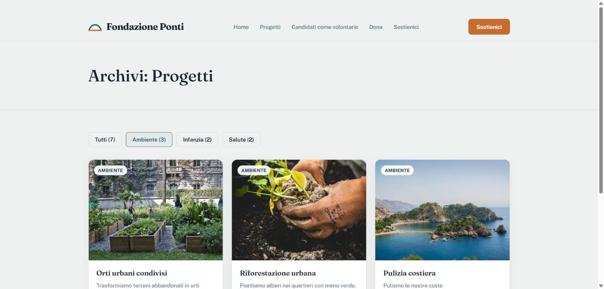
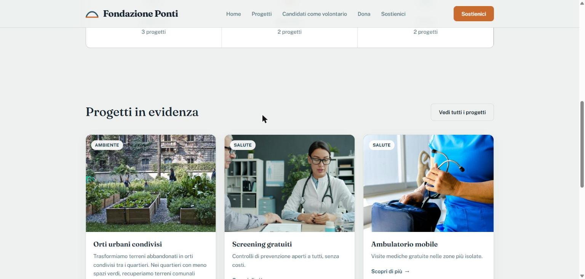
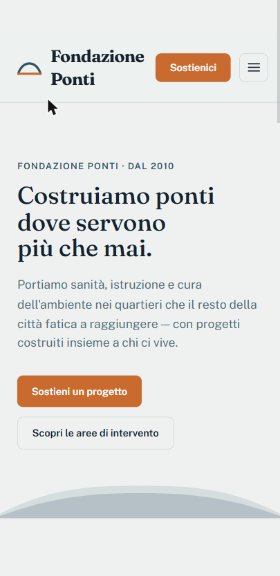
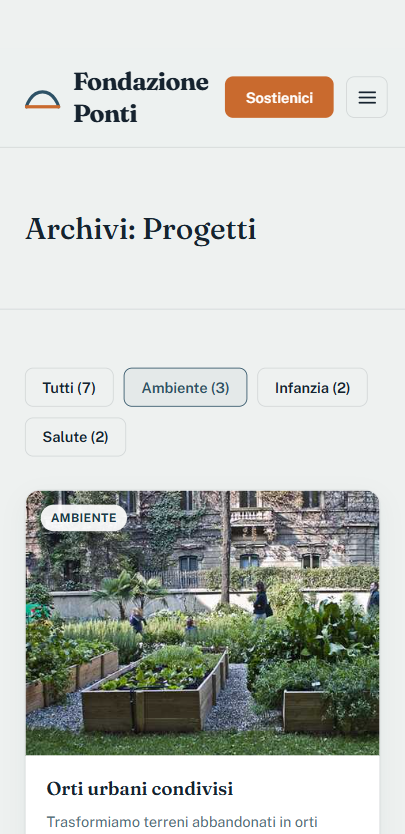

Case study · Sito no-profit (progetto di pratica)
Fondazione Ponti: sito per una fondazione umanitaria fittizia
Sito vetrina per una fondazione umanitaria immaginaria con sede a Napoli. L'ho costruito come esercizio personale, per allenarmi in vista di un incarico vero con un'agenzia che realizza soprattutto siti per fondazioni ed enti no-profit: non è online e non ha uno scopo commerciale reale.

Homepage: presentazione della fondazione e primo accesso alle aree di intervento.
Il contesto
Un sito per una fondazione deve mettere subito in chiaro cosa fa l'organizzazione e permettere a chi visita di arrivare in pochi passaggi a donare o a candidarsi come volontario. Serve anche un archivio dei progetti consultabile per area di intervento, per chi vuole approfondire prima di decidere se sostenere l'organizzazione. Ho impostato il sito su WordPress con struttura Bedrock, in modo che i contenuti (progetti, aree di intervento) restino gestibili da chi cura il sito senza dover toccare il codice.
Archivio progetti filtrabile
La pagina archivio mostra tutti i progetti della fondazione, filtrabili per area di intervento (Ambiente, Infanzia, Salute) senza ricaricare la pagina. Il filtro è l'unico componente interattivo Vue del sito: si appoggia al contenuto già renderizzato da WordPress e ne mostra o nasconde porzioni, invece di richiedere di nuovo i dati al server. La pagina resta quindi consultabile anche senza JavaScript attivo.

Archivio filtrato sull'area "Ambiente".
Progetti in evidenza e donazione
In homepage compaiono alcuni progetti in evidenza tra le diverse aree, con link alla pagina di dettaglio e da lì alla donazione. Ho scelto di rendere la donazione dichiaratamente simbolica, segnalato in pagina: un'integrazione di pagamento vera avrebbe richiesto conformità PCI-DSS, fuori scopo per un progetto dimostrativo come questo. Anche il conteggio progetti per area è reale (calcolato sui progetti effettivamente presenti), a differenza di un mockup iniziale che prevedeva statistiche globali inventate: le ho tolte perché con solo 6 progetti reali sarebbero state fuori luogo.

Progetti in evidenza in homepage.
Candidature volontari
Oltre alla donazione, il sito ha un form di candidatura per chi vuole proporsi come volontario, con validazione e protezione anti-spam. I dati inviati non diventano contenuto pubblico del sito: restano visibili solo in un'area riservata.
Anche in versione mobile
Il menu di navigazione è esteso su desktop e a comparsa (hamburger) su mobile, con lo stesso archivio progetti e la stessa homepage adattati alla larghezza dello schermo.

